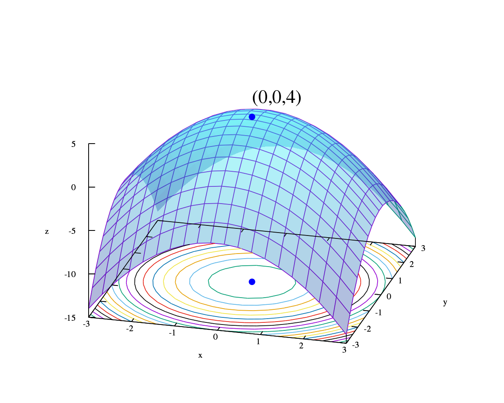

Optimalisering¶
Creative Commons BY-SA : bitjungle (Rune Mathisen) og fuzzbin (Tom Jarle Christiansen)

Begrepet “optimalisering” brukes ofte i forbindelse med matematisk modellering. Når vi sier at vi skal optimalisere noe i denne sammenhengen, mener vi at vi forsøker å finne den beste mulige løsningen under de betingelsene som er gitt for problemet vårt.
Denne siden dekker helt eller delvis kompetansemålene: Matematiske metoder 1
For at vi skal kunne optimalisere en [prosess](https://en.wikipedia.org/wiki/Process_(engineering) eller et system, må vi først ha en matematisk beskrivelse av prosessen eller systemet. Ofte er dette et sett av flere likninger med mange parametre. Når vi optimaliserer kan vi forsøke å endre parametrene innenfor gitte begrensninger, og forsøke å finne ut hvilken kombinasjon av parametre som gir det beste (“optimale”) resultatet.
Eksempel - Inngjerding¶

Vi tenker oss at vi har 60 meter med nettinggjerde som vi skal bruke til å lage en hønsegård. Inngjerdingen skal være rektangelformet. Vi vil jo selvfølgelig at hønene skal ha det best mulig, og ønsker derfor å lage området de kan bruke størst mulig. Hvordan kan dette løses?
Vi vet at et rektangel kan beskrives ved:
Areal: \( A = l \cdot b \)
Omkrets: \( O = 2l + 2b \)
der \(l\) er lengden, og \(b\) er bredden på rektangelet.
Vi har 60 meter med gjerde, så blir omkretsen \( 60 = 2l + 2b \).
Hvis vi kaller lengden for \(x\), kan vi skrive omkretsen som \( O = 2x + 2 \cdot (30 - x) \) der \(b = 30 - x\).
Arealet av inngjerdingen blir da \( A(x) = x \cdot (30 - x) = 30x - x^2\) , der x er mellom 0 og 30.
Vi plotter så funksjonen \(A(x)\):
# Importerer nødvendige biblioteker
import matplotlib.pyplot as plt
import numpy as np
def A(x):
return 30 * x - x**2
x = []
y = []
# Løkke som fyller tabell
for i in range(31):
x.append(i)
y.append(A(i))
# Utskrift av data
plt.grid() # Lager rutenett
plt.xlabel('$x$') # Merker x-aksen
plt.ylabel('$A(x)$') # Merker y-aksen
plt.plot(x, y, 'bo-.', label='$A(x)=30x - x^2$')
plt.legend()
plt.show()
---------------------------------------------------------------------------
ModuleNotFoundError Traceback (most recent call last)
<ipython-input-1-44431d51bdb3> in <module>
1 # Importerer nødvendige biblioteker
----> 2 import matplotlib.pyplot as plt
3 import numpy as np
4
5 def A(x):
ModuleNotFoundError: No module named 'matplotlib'
Vi kan se av grafen at arealet av rektangelet er størst når lengden \(x\) = 15m. Dette er jo toppunktet til funksjonen. Dette kan vi også finne ut ved å se på når den deriverte \(A'(x) = 0\).
m = max(y)
h = y.index(max(y))
print("Det største arealet av rektangelet er: {} m^2".format(m)) # Finner toppunktet til A(x)
print("Når arealet er størst er høyden {} meter.".format(h)) # Finnver ved hvilken x-verdi dette er.
Det største arealet av rektangelet er: 225 m^2
Når arealet er størst er høyden 15 meter.
Vi har nå funnet det optimale arealet ingjerdingen kan ha hvis vi har 60 meter med gjerde og skal lage en rektangulær hønsegård!
Oppgaver¶
En bedrift produserer og selger en vare. Kostnadene til bedriften er gitt ved \(K(x) = 8.5x^2 + 25x + 11900\), hvor \(x\) er antall varer som produseres. Inntektene er gitt ved \(I(x) = 790x\). Lag et program som finner ut den vareproduksjonen som gir høyest overskudd.
Et A4-ark kan brettes til en boks ved å brette opp kantene som er igjen etter å ha klippet ut kvadrater med sidelengde x i hvert hjørne av arket. For hvilken x er volumet størst?
Lag et program som finner arealet av det største rektangelet som kan innskrives i en rettvinklet trekant med sidene 3m, 4m og 5m. (Hint: Se på hypotenusen som en rett linje på formen \(l=ax+b\))